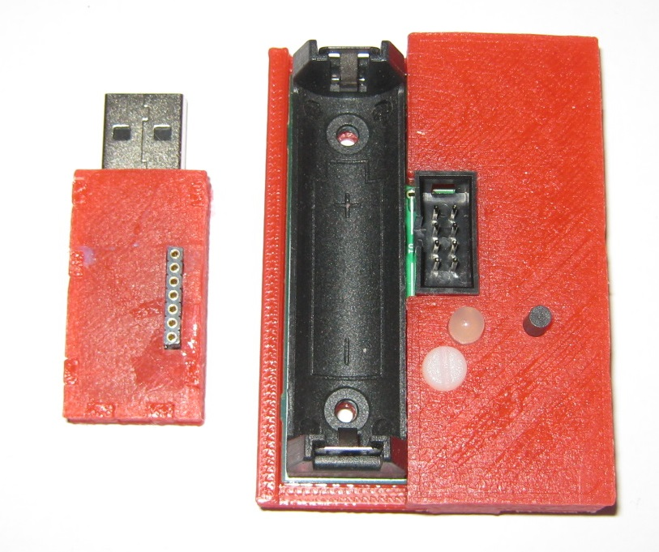

The WHT consists of two separate devices: the first device is the tracker which contains the motion sensor and a microcontroller (just a fancy word for a low power computer) with a 2.4GHz radio transmitter and receiver. The second device is a USB dongle, another microcontroller and another 2.4GHz radio. This USB dongle receives the movement sensor information from the tracker, then processes it and sends it over the USB port to the PC.

As I've mentioned, the microcontrollers on these two devices are essentially small computers and they contain a little bit of flash memory (16 kilobytes each). This flash memory stores the software these small computers are running. Software running on microcontrollers is often called firmware but in essence it is not much different from software running on your PC or smartphone. And just like any software, the firmware on the tracker and the dongle can be updated to fix bugs or add new features. This update process is called firmware flashing.
In order to flash the two devices, you need to have another device called a flash programmer. It connects to the PC though a USB cable, and to the tracker through a cable, or to the dongle by directly plugging it into the programmer. The programmer receives commands and data from the PC, then sends these commands to the microcontroller on the tracker or dongle which overwrites their flash memory.
The flash programmer with the tracker flashing cable:
The flash programmer does not need drivers, but you will need to wait a few minutes after plugging in the programmer for the first time for Windows to figure that out.
The necessary software
The PC software needed to communicate with the flash programmer, the flash images for the dongle and tracker and the WHT configuration program are all contained in the WHT software package. You will have received it together with this document.
The WHT package has three subfolders:
config - the configuration and calibration program.
flashing_instructions - contains these instructions.
flash - contains the files necessary for the flashing process.
The flash folder contains these files:
nrfburn.exe - the software which communicates with the flash programmer
flash_dongle.bat - the windows batch file which calls nrfburn.exe with the required parameters to flash the dongle
flash_tracker.bat - the windows batch file which calls nrfburn.exe with the required parameters to flash the tracker
tracker.hex - the tracker flash image
whtdngl.hex - the dongle flash image
Tracker flashing details
Remove the battery from the tracker
Remove the flash programmer from USB (if it is plugged in)
If the tracker or the dongle is connected to the flash programmer - remove them
Plug one end of the flashing cable into the tracker and other into the flash programmer
Plug the programmer with the tracker attached into USB. If this is the first time you plugged in the programmer into your PC's USB port, wait a minute or two for Windows to recognize the programmer. You will get a "This device is now ready" message from Windows.
Go to the folder where you unpacked the WHT software and in the flash subfolder double-click the flash_tracker batch file. The flashing process should take about 6 seconds.
If the flashing is successful you will see this message in the window:
Note that the number of bytes loaded will be different than shown on this image.
Unplug the flash programmer from USB.
Remove the programming cable from the programmer and the tracker.
Put the battery back into the tracker.
You're done!
Dongle flashing details
Remove the flash programmer from USB (if it is plugged in)
If the tracker or the dongle is connected to the flash programmer - remove them
Remove the tracker or from the programmer if it is connected to it
Plug the dongle directly into the programmer's row of pins labelled "LU1+ generic". Make sure that every pin in the programmer is connected to every slot in the dongle.
Plug the programmer with the dongle attached into USB. If this is the first time you plugged in the programmer into your PCs USB port, wait a minute or two for Windows to recognize the programmer. You will get a "This device is now ready" message from Windows.
Go to the folder where you unpacked the WHT software package and run the flash_dongle batch file. The flashing process should take about 6 seconds.
If the flashing is successful you will see this message in the window:
Note that the number of bytes loaded will be different than shown on this image.
Remove the programmer with the dongle from USB
Remove the USB dongle from the programmer
You're done!
After the dongle and tracker have been flashed you will need to recalibrate and reconfigure the devices with the WHTConfig.exe program. You can find the instructions in the video below.